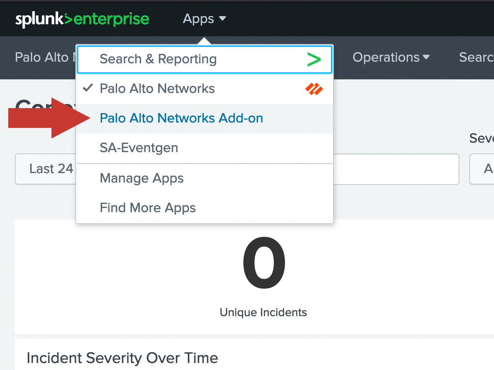
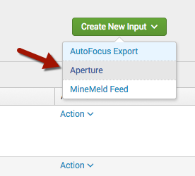

Aperture
Aperture SaaS Security is supported starting with App/Add-on 6.0.0.
Aperture is cloud-hosted so logs are retrieved by Splunk using the Aperture logging API. Logs are pulled down in JSON format with sourcetype="pan:aperture" and eventtype="pan_aperture".
Create a Client App in Aperture
Use the instruction in the Aperture Administrator's Guide to create a Client App in your Aperture instance:
This action will provide you a Client ID and Client Secret. The Client Secret will be shown only once, so make sure to record it or you'll need to re-create the Client App to get a new Client Secret.
Add the credentials to Splunk
In Splunk, navigate to the Palo Alto Networks Add-on.

Once inside the Add-on, click the Configuration tab, and ensure you're on the Account tab. Click Add in the top right corner to add new credentials.
In the dialog window, enter the following:
| Field | Value |
|---|---|
| Account name | Any friendly account name (eg. "Aperture_creds") |
| Username | The Client ID |
| Password | The Client Secret |
Then click Add to save these credentials.
Create an Aperture input in Splunk
Within the Add-on, click the Inputs tab at the top left. Then click Create New Input and then select Aperture.


Enter the settings for the Aperture input:
| Field | Value |
|---|---|
| Name | Any friendly name (eg. "Aperture") |
| Interval | Frequency in seconds to check for new logs (60 seconds recommended) |
| Index | The index in which to put the Aperture logs |
| Global Account | The account you created in the previous step |
Click Add to save the Aperture input.
Verify
After waiting the interval time, check that logs are coming into Splunk by clicking Search at the top and entering this search:
eventtype="pan_aperture"
You should see some JSON formatted logs show up. If nothing shows up, wait a little longer, ensure there is activity in Aperture to generate logs, and try the Troubleshooting Guide.